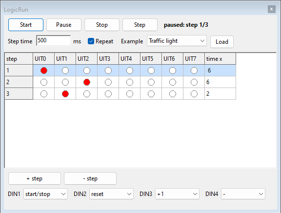
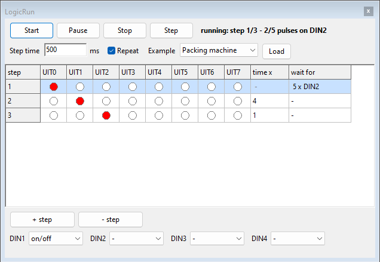
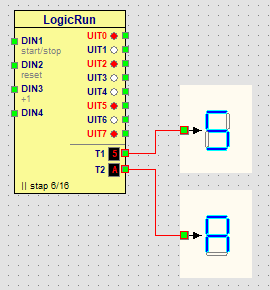
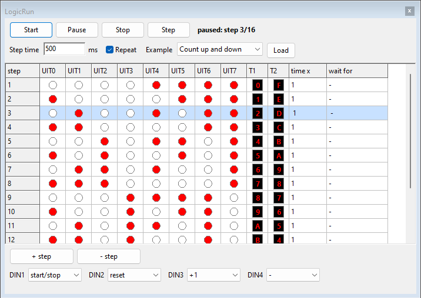

LogicRun: programming in stepsLogicRun: programming in steps
LogicRun: programming in stepsLogicRun: programming in stepsLogicRun is a block that you do not wire but program. You write a series of steps; each step switches a number of outputs on. That way you build a traffic light, a running light or a counter without using a single gate.

You connect the block with ordinary wires: switches and sensors to the inputs, the outputs to lamps, relays, a buzzer or the inputs of other components.
LogicRun in the button bar. The
LogicRun window opens next to Logic.There can be only one LogicRun block on a panel. Double-click the block, or choose Edit program... in the right-click menu, to open the window. The right-click menu also lets you lock the block or delete it.

| Button or field | What does it do? |
|---|---|
| Start | The program runs, step after step. |
| Pause | The program stays at the current step; the outputs stay as they are. |
| Stop | The program stops and goes back to the beginning; all outputs switch off. |
| Step | One step further, useful to check your program step by step. |
| Step time | How long one time unit lasts, in milliseconds (500 ms = half a second). |
| Repeat | On: after the last step the program starts again. Off: it stops at the last step. |
| Example and Load | Load a ready-made program: choose it in the list and click Load. When the window opens, the list shows — choose — (see Examples). |
| + step and - step | Add a step after the selected step, or delete the selected step. |
| DIN1 to DIN4 | What each input does. |
| wait for | Click in this column to make a step wait for an input or a number of pulses (see Waiting). |
| T1 and T2 | The digit T1 and T2 show on a display in that step. Click it to choose a digit from 0 to F; LogicRun then sets the 4 outputs itself (see Displays). |
At the top you see whether the program is running and which step it is at. The current step is light blue in the table.
A program has at most 64 steps.
A step normally lasts time x times the step time. In the wait for column you can make a step wait instead. Click in that column and choose:
| Choice | The step lasts until ... | For example |
|---|---|---|
| None | the time is up (as usual) | a traffic light |
| Until input on | the chosen input is on | a limit switch: the cart drives until it reaches the wall |
| Until input off | the chosen input is off | waiting until someone releases a button |
| Until number of pulses on input | that many pulses have arrived on the input | counting boxes: after 5 boxes the belt stops |

A step that waits has no time: the time x column then shows a dash. At the top of the window and at the bottom of the block you see what the step is waiting for and how many pulses have been counted.
Below UIT7 the block has two extra connections for a display, just like the output of a counter. They read the outputs as a binary number:
| Connection | Reads | Shows |
|---|---|---|
| T1 | UIT0 to UIT3 (UIT0 = 1, UIT1 = 2, UIT2 = 4, UIT3 = 8) | 0 to 9 and A to F |
| T2 | UIT4 to UIT7 (UIT4 = 1, UIT5 = 2, UIT6 = 4, UIT7 = 8) | 0 to 9 and A to F |

In the window, the T1 and T2 columns show the digit of each step. Click such a digit and choose another one: LogicRun then switches the 4 outputs on or off itself. Next to each digit in the menu you see the 4 bits, e.g. 5 = 0101. The normal outputs keep working, so you can drive lamps and a display at the same time.

Put two displays side by side, T2 on the left and T1 on the right, to get a two-digit number (from 00 to FF).
Most functions react at the moment the input switches on: use a push button for them. For a switch there is the on/off function.
| Function | What happens when the input switches on? |
|---|---|
| start/stop | If the program is not running, it starts; if it is running, it pauses. |
| reset | The program goes to the first step. |
| +1 | The program goes one step further. |
| on/off | The program runs as long as the input is on. When it goes off, the program stops and all outputs go off (handy with a switch). |
| - | Nothing: the input is not used. |
| Example | Outputs |
|---|---|
| Traffic light | UIT0 red, UIT1 amber, UIT2 green. |
| Running light | UIT0 to UIT7 switch on one by one. |
| Motor left/right | UIT0 motor left, UIT1 motor right, with a short stop in between. Connect them to L and R of a motor. |
| 4-bit counter | UIT0 to UIT3 count in binary from 0 to 15 (UIT0 = 1, UIT1 = 2, UIT2 = 4, UIT3 = 8). |
| Cart | UIT0 forward until DIN3 is on (limit switch), a short stop, UIT1 backward until DIN4 is on; DIN1 on/off. Connect UIT0 to R and UIT1 to L of a motor. |
| Packing machine | UIT0 conveyor belt until 5 pulses have arrived on DIN2 (boxes), UIT1 packing (2 s), UIT2 resets a counter; DIN1 on/off. |
| Count up and down | T1 counts up from 0 to F, T2 counts down from F to 0 at the same time. Connect T1 and T2 to a display. |
| Person back and forth | UIT1 to the right until DIN4 is on (S2), 2 s stop, UIT0 to the left until DIN3 is on (S1), 2 s stop; DIN1 on/off. The same program as in lesson 16: connect UIT0 to L and UIT1 to R of a person, S1 to DIN3 and S2 to DIN4. |
| Cart on a road | UIT0 forward until there have been 3 pulses on DIN3 (post 3), 2 s stop, forward until DIN4 is on (Finish), 2 s stop, UIT1 backward until DIN2 is on (Start); DIN1 on/off. The same program as in lesson 17: connect UIT0 to V and UIT1 to A of a cart, Start to DIN2, Tel to DIN3 and Finish to DIN4. |
| Music: Twinkle, twinkle, little star | One step per note on UIT0 to UIT7 (do to do'), step time 125 ms: time 4 is a quarter note, time 8 a half note; the same note twice gets a short rest in between. DIN1 on/off. The same program as in lesson 18: connect UIT0 to UIT7 to the inputs of a music box. |
The program is saved together with the panel in the panel file (.lpl).
Undo also works for changes to the program. An older version of Logic
skips the LogicRun block.
Try it yourself in lesson 12: Programming with LogicRun.